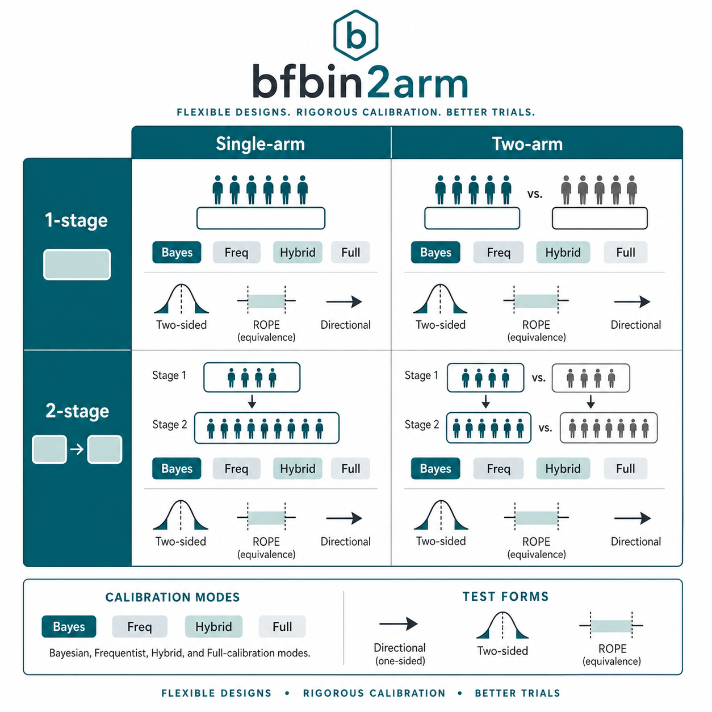

bfbin2arm
bfbin2arm provides methodology and software for Bayes-factor-based and ROPE-based design, calibration, and operating-characteristic evaluation of phase II clinical trials with binary endpoints. The package focuses on single-arm and two-arm Bayesian designs, including one-stage and two-stage settings, with tools for design calibration, frequentist operating characteristics, and visualisation of trial operating behavior.
The package website collects methodological articles, worked examples, and reference documentation intended to support both applied use and methodological development.
Funding
Funded by the Deutsche Forschungsgemeinschaft (DFG, German Research Foundation) - Project number 549296018.
For any inquiries, contact Dr. Riko Kelter, riko.kelter@uni-koeln.de.

Main articles
The software package bfbin2arm emerged from clinical trial designs for two-arm clinical phase II trials with binary endpoints, using Bayes factors as the primary measure of evidence. Over time, more designs were implemented, including one- and two-stage designs, single-arm and two-arm designs, designs for equivalence, non-inferiority and superiority tests, optimal designs which minimize the expected sample size under the null hypothesis, as well as different calibration modes for the available designs such as Bayesian, frequentist or hybrid calibration.

An overview about the implemented designs is given in:
Equivalence testing in single-arm one-stage designs:
- ROPE-based trial design for single-arm one-stage phase II trials with binary endpoints
- Frequentist and hybrid calibration of one-stage ROPE-based designs for single-arm phase II trials
One-stage single-arm designs:
Two-stage (optimal) single-arm designs:
- Optimal Bayesian calibration for single-arm two-stage Bayes factor designs
- Optimal frequentist calibration for single-arm two-stage Bayes factor designs with binary endpoints
- Optimal hybrid calibration for single-arm two-stage Bayes factor designs with binary endpoints
- Optimal full calibration for single-arm two-stage Bayes factor designs with binary endpoints
One-stage two-arm designs:
Two-stage (optimal) two-arm designs: